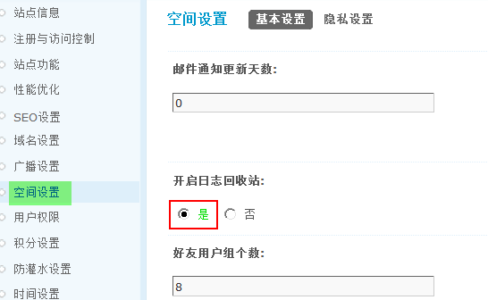

日志回收站
日志回收站是 Discuz! X3 中增加的新功能，主要用于日志被误删除后的恢复，管理人员如果把某些会员有价值的日志删除了，或者会员自己不小心删除了某篇日志，都可以在日志回收站中找到并进行恢复。
我们只要在后台开启了日志回收站功能，有被删除的日志将都被放在日志回收站中。
一、如何开启日志回收站
操作路径：【后台】=>【全局】=>【空间设置】
找到“开启日志回收站”选择“是”即可开启。
二、日志列表
打开日志回收站后，默认是按照日志删除的时间排列的。可以选择对某个或者全部日志进行彻底删除操作，或者还原操作。
这里可以看到日志的详情，如日志ID、作者、标题、日志查看数、回复数、热度、删除时间、隐私，管理员可以根据实际情况进行还原和删除的管理操作。
在这里删除后日志将被彻底删除，所以删除时要慎重。
二、搜索
日志回收站中，可以根据日志ID、发表日志用户名、标题或内容关键字，查看权限等条件进行搜索，并对搜索出来的日志进行处理。
可以对搜索结果进行单个和批量删除，恢复的操作。
在这里删除后日志将被彻底删除，所以删除时要慎重。